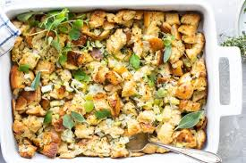

Preheat: Oven to 325°F (165°C). Remove neck/giblets from turkey and pat dry inside and out.
Mix: softened butter with dried herbs, salt, and pepper.
Rub: half the herb butter under the turkey skin and the rest all over the outside.
Stuff: the cavity with the quartered onion, lemon, and apple. Tie legs together if desired.
Roast: breast-side up in a roasting pan at 325°F for 13-15 minutes per pound, or until a meat thermometer in the thigh reads 165°F (74°C). Tent with foil if browning too fast.
Rest: the turkey for 30 minutes before carving to keep it juicy.

Stuffing
Ingredients
8 cups dried white bread cubes
1/2 cup butter
1 medium onion, chopped
4 stalks celery, chopped
1 3/4 cups chicken or turkey broth
2 tsp poulty seasoining
Salt and pepper, to taste
Instructions
Preheat: oven to 400°F (200°C) and butter a 9x13 inch baking dish.
Sauté: onion and celery in the butter in a large skillet over medium heat until softened (about 5 minutes).
Add: poultry seasoning, salt, pepper, and the broth to the skillet and bring to a boil.
Combine: the dried bread cubes in a large bowl with the hot vegetable-broth mixture and stir well to coat.
Transfer: the mixture to the prepared baking dish and cover with foil.
Bake: for 25 minutes covered. Remove the foil and bake for another 15-20 minutes until the top is golden brown and crispy.